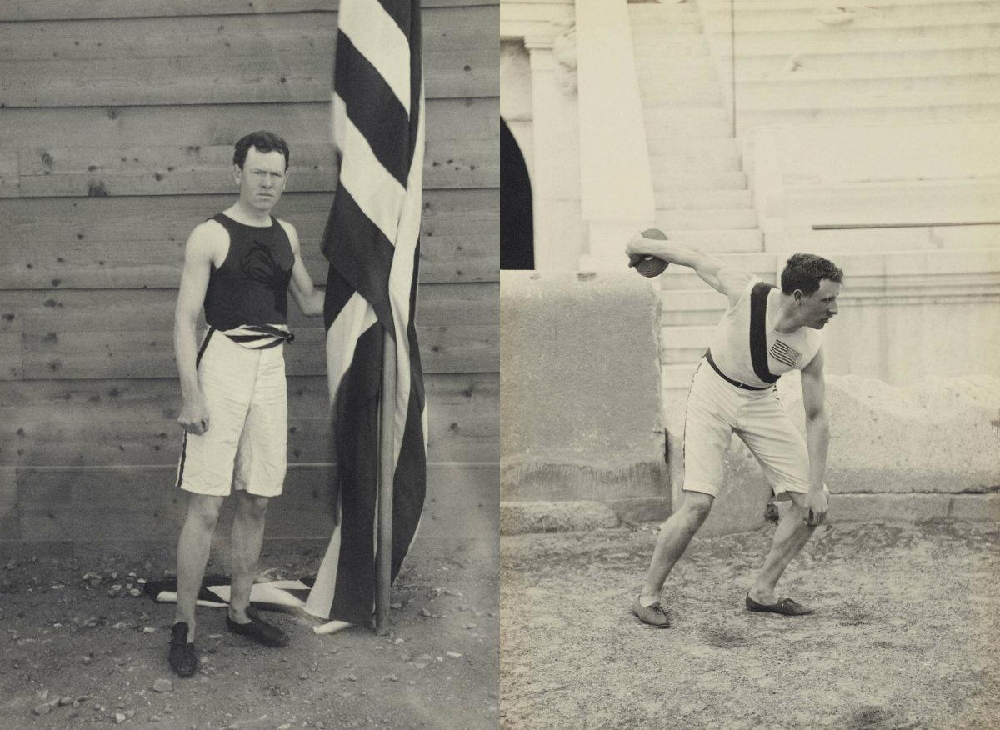
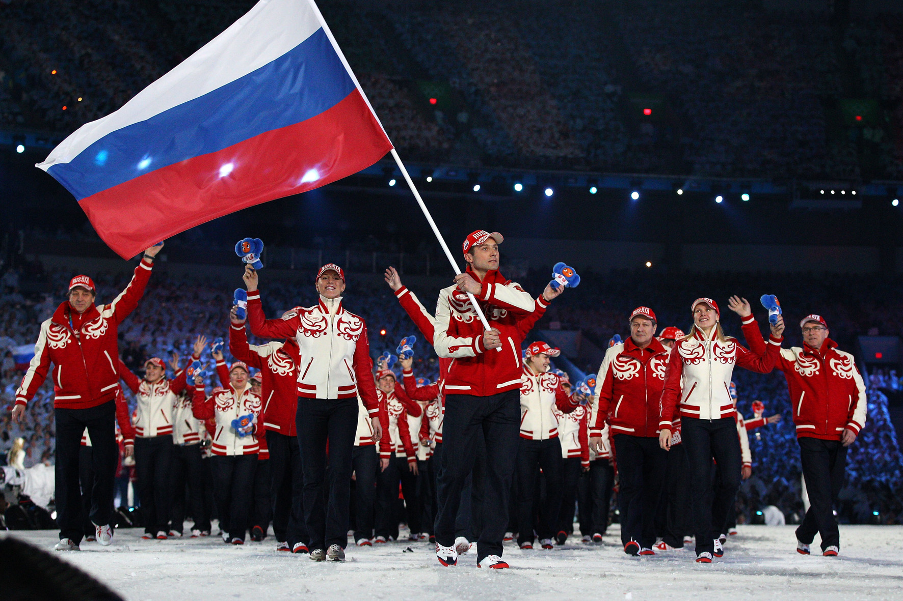
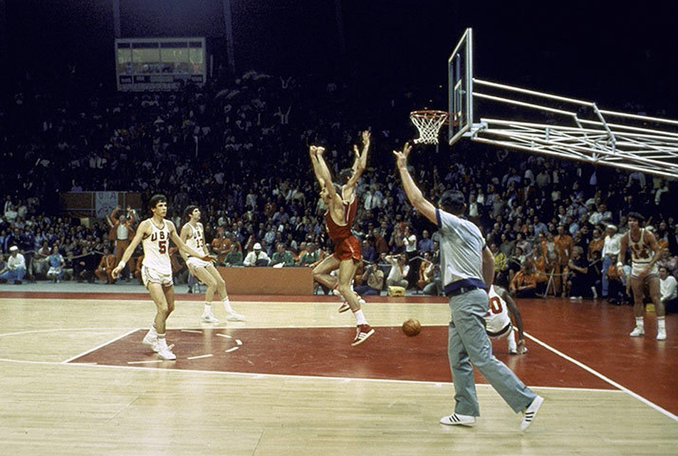
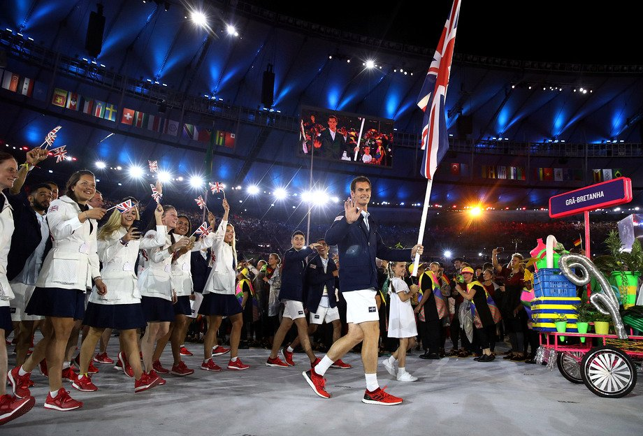

Американские спортсмены завоевали в общей сложности 2673 медали (1075 из них золотые) на летних Олимпийских играх и еще 307 (105 из них золотые) на зимних Олимпийских играх, что сделало Соединенные Штаты самой плодовитой страной, завоевавшей медали в истории Олимпийских игр. США за всё время игр уверенно побеждает в таких видах спортах, как баскетбол, лёгкая атлетика, софтбол и теннис. На данный момент по кол-ву медалей они уступают только в зимних олимпийских играх Норвегии на 61 медаль

Джеймс Конноли — первый олимпийский чемпион в мире.
Лучшие моменты США за всю историю на олимпийских играх
РоссияТОП-2

За всю историю существования Олимпийских соревнований Россия участвовала в девятнадцати летних и шестнадцати зимних играх. Всего с 1900 года нашими спортсменами было завоевано на Летних Олимпийских играх 1529 медалей: 574 золотых, 483 серебряных и 472 бронзовых. Россия близка к тому, чтобы войти в 3 лучших команд по кол-ву медалей на зимних олимпийских играх, сейчас она занимает 4 место, имея 194 медали: 78 золотые, 57 серебряных, 59 бронзовых. Россия показывает отличные результаты в таких видах спорта, как гимнастика, борьба, тяжелая атлетика, хоккей и волейбол
Главные соперники
Традиционными соперниками сборной являются представители США, Норвегии, Великобритании, Канады и Китая. Соревнования с данными сборными являются одними из самых волнительными, потому что борьба идёт до последний капли крови, вспомнить один финал по баскетболу в 1972 году, в котором исход матча мог решиться не в пользу СССР, но те самые 3 секунды, которые в итоге решили исход игры, до сих помнят все болельшики СССР

Легендарная победа 1972 года в финале по баскетболу между СССР и США
Победы сборной России на летних олимпийских играх 2020 в Токио
ВеликобретанияТОП-3

Великобретания замыкает 3 лидеров по кол-ву медалей на летних олимпийских игр, всего 916 медалей, 285 золотые, 316 серебрянные, 315 бронзовых, и входит в топ-19 на зимних олимпийских играх, имея всего 32 медали, 11 зототых, 4 серебрянных, 17 бронзовых. Представитили Великобретании активно борятся за призовые места, и нередко побеждают, в таких видах спорта, как велоспорт, лёгкая атлетика и плавание
Сильнейшие игроки
Джейсон Кенни-семикратный чемпион по велоспорту. Хой Крис-шестикратный чемпион по велоспорту. Редгрейв Стивен Джеффри-пятикратный чемпион по гребле. Радмилович Пол-чертырехкратный чемпион по плаванию.